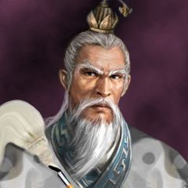

张三丰[1]，元﹑明著名道士，生辰时间跨越南宋、蒙元和明朝三个朝代（1247年到1458年）。名通﹐又名全一﹐字君实(亦作“君宝”)﹐号玄玄子，经考证得字子冲南宋淳祐七年（1247年）生于蒙古帝国统治的辽东懿州 还有一说是【南召县】。但经考证张三丰生于福建省邵武府（今福建南平邵武和平镇坎下村），以其不修边幅﹐人称张邋遢。在各种张三丰的传记或有关他的材料里，还有全弌、玄玄、三仹、三峰、三丰遯老、通、玄一、君实、居宝、昆阳、保和容忍三丰子、喇闼、邋遢张仙人、蹋仙等诸多名号。 游宝鸡山中，有三山峰，挺秀仓润可喜，因号三丰子。亦有因“丰”字和“丰”的简体字同形而错称为“张三丰”。他的生辰籍贯都有争议，一般认为他是元朝末年、明朝初年的武当山道士。或作全一真人。
据道教界推测，其活动时期约由元延佑（1314～1320）年间到明永乐十五年（1417）。传说其丰姿魁伟﹐大耳圆目﹐须髯如戟。无论寒暑﹐只一衲一蓑﹐一餐能食升斗﹐或数日一食﹐或数月不食﹐事能前知。游止无恒。居宝鸡金台观时﹐曾死而复活﹐道徒称其为“阳神出游”。入明﹐自称“大元遗老”。时隐时现﹐行踪莫测。洪武二十四年(1391)朝廷觅之不得。永乐年间﹐成祖遣使屡访皆不遇。天顺三年(1459年)诏封通微显化真人。 张三丰认为古今仅正邪两教﹐所谓儒﹑释﹑道三教仅为创始人之不同﹐实则“牟尼﹑孔﹑老皆名曰道”﹐而“修己利人﹐其趋一也”﹐又称“一阴一阳之谓道﹐修道者修此阴阳之道也﹐一阴一阳一性一命而已矣﹐《中庸》云﹕修道之谓教。三教圣人皆本此道以立其教也”。他还认为:“玄学以功德为体﹐金丹为用﹐而后可以成仙。”后人编有《张三丰先生全集》。收入《道藏辑要》。据《古今太极拳谱及源流阐秘》李师融先生的考证，三丰卒年应在明代天顺二年，即公元1458年，其寿为212岁。 从诸多的资料分析，确是证实了张三丰的生卒考，确实是享年212岁。 也是非常罕见，历史上少有的超长寿，所以令人刮目相视。
至正初，张三丰返故里扫墓，年已过百岁。复入燕京，昔日故交皆已过世。西山得遇邱道人相叙道，乃知邱为早年相遇之高士。别后复至秦蜀，又游荆楚之吴越，侨寓金陵，传道沈万三。后仍入秦，居金台观。至正十九年，张三丰离别金陵时预知沈万三有发配边疆之祸，遂叮嘱曰：“东西王气正旺，今后我们会在西南相会。”至正十九年九月二十日阳神出游，弟子杨轨山以为羽化，置棺收殓，适阳神回归。三丰念轨山朴实善良，遂携其隐去。后二年，元朝数尽，明主未立，张三丰又结庵武当山。时已一百二十余岁。居武当搜奇揽胜，见遍山宫观皆毁于兵火，乃言“此山异日必大兴”。遂领道众将各处宫观废墟一一清理，草创庙观以延香火。时授高足有邱元清、卢秋云、刘古泉、杨善澄、周真德、孙碧云等。张守清也得与三丰相交，结为道友。洪武十七年至十八年间，朱元璋两度诏请三丰入京，皆避而不见。洪武二十三年，张三丰离开武当复作云游。洪武二十五年，张三丰遁入云南。这时，沈万三因得罪朱元璋，遂被治罪全家发配云南。在云南恰遇张三丰，正应“日后当于西南会面”之说。张三丰遂沈万三天元服食大药，夫妻得服遂白日飞升。永乐初，朱棣又命侍读学士胡广诏访三丰，岂料胡广在武当与三丰遇而不识。永乐十年，成祖朱棣调集军民工匠三十余万众，经十年，建成八宫、二观、三十六庵堂、七十二岩庙等庞大工程建筑。其时三丰混迹于民众之中，朱棣派人屡访不遇。据《张三丰外传》的记载，说在1418年春，永乐帝特意驱车去拜望张三丰，三丰不在，有兴而来，扫兴而归。永乐帝勃然大怒，于是命令一个叫胡广的人去招寻张三丰，如招寻不到，则要处死胡广。永乐十四年，朱棣怒斥胡广寻三丰不力，胡广再访武当，于武当祈祷，望三丰先生能念其诚苦应诏回京，终见三丰。此时三丰年已一百六十七岁。传说张三丰当时应太上老君邀请参加群仙会，正驾云头前往，过武当遂感胡广之祈祷，于是按落云头，降于胡广面前，对其言：“你且回京见驾，言我即去便是，不必多虑。”胡广便策马回京。跨年还得京师，乃知三丰先生早于前在金殿与永乐会得一面。此即为“金殿飞升”之说。此时三丰年已一百六十九岁。当时还有一种传说，说张三丰能飞身入宫、遁身而归，这些都不足为信。但有一点还是真实的，张三丰曾书字一函，令弟子孙碧云向永乐帝禀告，告之以具体的长生之道。因为皇帝都非常希望长寿，这也近乎常理。
清雍正初年，有汪梦九先生曾遇三丰真人多示其教。此时三丰应有四百七十余岁。清乾隆十一年《南召县志》卷二中有这样记载：南召县太山庙乡口子河里有“张三丰故里石碑”一通，碑后有其草庵遗址。1917年此处立“张三丰初居此地，而道成于天宝观”石碑一通。（一说辽东懿州人）由于张三丰的神名噪起，明朝皇帝又给他三个赐号。即明英宗赐他为“通微显化真人”；明宪宗特封为“韬光尚志真仙”；明世宗赠封他为“清虚元妙真君”。史书记载张三丰龟形鹤背，大耳圆目，须髯如戟，寒来暑往仅一纳衣，雨雪天气蓑衣着身。1258年，宗教界爆发了中国历史上规模最大的一次佛道大辩论。蒙古大汗蒙哥亲临主持，嵩山少林寺长老福裕和全真教高道张志敬分别率队参加舌战，结果道教遭到惨败。从此，道教日渐衰沉。但一个世纪后，张三丰在武当山创立一个新的道派——三丰派，掀起了中国道教发展史上的最后一波，并成为武当武功的创立者。
个人经历诚然，自唐以来三教合流已是一股强大的潮流，但三教的彼此攻伐却从未停止过。元朝时有儒士论及三教，说佛是黄金，仙是白玉，儒是粮食，指出金玉虽贵，但有它无多，无它不少，而社会不可一日无粮。这个视佛、道如金玉的比喻背后隐藏着对佛、道的贬斥。张三丰倡三教同一之说，实际上是为道教辩护，替“邪道”开脱。他只承认有正邪之别，否认有三教之分，所谓三教不过是创始人不同而已。他说，儒、佛、道都讲道，它们的社会功用都是“修身利人”，“儒离此道不成儒，佛离此道不成佛，仙离此道不成仙”，儒家“行道济时”，佛家“悟道觉世”，道家“藏道度人”，同孔子一样，老子所传的也是“正心修身治国平天下”的理论。儒家修养人道，仙家修炼仙道。张三丰把二者联系起来，以修人道为炼仙道的基础，强调无论贵贱贤愚，老衰少壮，只要素行阴德，仁慈悲悯，忠孝信诚，全于人道，离仙道也就自然不远了。他巧妙地把道家的内炼思想同儒家的道德学说牵合在一起，说：“人能修正身心，则真精真神聚其中，大才大德出其中。”这些说法较之于先前的道教宗师可谓别具一格。
张三丰还别出心裁地给儒家倡导的仁义与道家炼丹的铅汞画等号，称“仙家铅汞即仁义的种子”。在他那里，阴阳家五行的金木水火土、儒家五德的仁义礼智信和人体五经的肝肺心脾肾是一一对应的。他在《五德篇》中说：“仁属木也，肝也;义属金也，肺也;礼属火也，心也；智属水也，肾也；信属土也，脾也。”心有五德，身有五经，天地有五行，皆缺一不可，心无仁者必无养育之念，其肝已绝，而木为之槁枯；无义者必无权宜之思，其肺已绝，而金为之朽钝；无礼者必无光明之色，真心已绝，而火为之衰熄;无智者必无清澄之意，其肾已绝，而水为之昏涸;无信者必无交孚之情，其脾已绝，而土为之分崩。所以说“德包乎身，身包乎心，身为心用，心以德明，是身即心，是心即身，是五德即五经，德失经失，德成身成，身成经成，而后可以参赞天地之五行”。这种观点的奇妙是空前的，其比附也是绝后的，没有多少科学价值和社会作用。个人成就
张三丰著述丰富，诸如《大道论》、《玄机直讲》、《玄要篇》，被后代收积成集，这就是流传至今的《张三丰先生全集》。其中不少篇章为后代奉道者所推崇，称他的《大道论》穷尽性命归真之道，发微圣贤仙佛之理。不过，张三丰的杰作当称《无根树》丹词。千百年来道家理论玄奥，文字晦涩，不能为社会所广泛接受，从而阻碍了道教的深入传播。张三丰采用歌词的体裁、通俗的文字把玄奥的修真理论化为脍炙人口的曲词《无根树》。这篇无根树共24首，包含了张三丰的全部修真理论和方法。只要细细领悟他的《无根树》，就会打开通玄路，就能步入仙道门，正如他在《自题无根树词》中所说的那样“要知端的通玄路，细玩无根树下花”。现择其中几首以窥探张三丰的修炼主张。
无根树，花王幽，贪恋荣华谁肯休。浮生事，苦海舟，荡来飘去不自由。无岸无边难泊系，常在鱼龙险处游。肯回首，是岸头，莫待风波坏了舟。
丹词开宗指出人生贪恋荣华富贵，犹如在苦海里漂泊，时常处在危险之中，规劝世人要超脱名利，及时修炼，“莫待风波坏了舟”。无根树，花正微，树老重新接嫩枝。梅寄柳，桑接梨，传与修真作样儿。自古神仙栽接法，大老原来有药医。访明师，问方儿，下手速修犹太迟。这诗针对年老体衰者提出，如果老年不自暴自弃，炼好精气神三宝，以性接命，仍然可以返老还童。无根树，花正青，花酒神仙古到今。烟花寨，酒肉林，不断荤腥不犯淫。犯淫丧失长生宝，酒肉穿肠道在心。打开门，说与君，无花无酒道不成。后代对这首词的理解很不一致。一些人抓住末句“无花无酒道不成”，说张三丰为酒色神仙；而张三丰的崇拜者则把“花酒”解释为人身元气，并非实指烟花酒肉。其中“不断荤腥不犯淫”和“犯淫丧失长生宝，酒肉穿肠道在心”倒似主张戒淫不戒酒。无根树，花正孤，借问阴阳得类无?雄鸡卵，难抢雏，背了阴阳造化炉。
女子无夫为怨女，男子无妻为旷夫。叹迷途，太模糊，静坐孤修气转枯。张三丰以雌雄、夫妻的浅显道理说明阴阳相抢的深奥理论，从而指出不能孤修性或命，而必须性(心理)命(生理)双修。无根树，花正圆，结果收成滋味全。如朱橘，似弹丸，护守提防莫放闲。学些草木收头法，复命归根还本原。选灵地，结道庵，会合先天了大还。描绘还丹的景象，点明只要毫不懈怠地修炼，即可把精气神融合在一起，结成貌似朱橘、弹丸的纯阳之物，就能返璞归真了。无根树，花正双，龙虎登坛战一场。铅投汞，配阴阳，法象玄珠无价偿。此是家园真种子，返老还童寿命长。上天堂，极乐方，免得轮回见阎王。此言阴阳相配、三宝合炼之法。如果性情持聚，精神凝结，阴阳相配，一气混合，就完全可以达到返老还童、延年益寿的修炼目的。
无根树，花正奇，月里栽培片晌时。挚云手，步云梯，采取先天第一枝。饮酒戴花神气爽，笑煞仙翁醉似泥。托心知，谨护持，惟恐炉中火候飞。
这一首则主张采取口诀在乎性定情忘，回光返照，进而真气自生，渐入佳境，就好像戴仙花、饮仙酒，其乐无穷。但是，得药入炉又需要便宜温养，神明默运，谨守护持，一意不散，否则就会火候差失，炉毁丹飞。张三丰在内丹修持的各个环节，诸如戒欲、采药、炼药等各有一首词加以阐述。就其内容而言，可以说没有超乎前人的独到之处。但是，他却突破了长期以来道学文字艰深玄奥的规束，把魏伯阳《参同契》、陈转《无极图》、张伯端《悟真篇》的炼形、保精、调神、运气、归真还原等修真理论以通俗易懂的歌词形式表现出来，这便是张三丰在促进道教思想传播方面的贡献。后世道众因此对他的《无根树》推崇备至，说它“吐老庄之秘密，续钟吕之心传”，不少道教宗师不厌其烦地对《无根树》进行注释阐发，其中以清代龙门派传人刘一明和内丹西派始祖李西月的注释最为详实和精到。对张三丰本人道教也极为崇拜。明清时出现的道教派别几乎都同张三丰有联系，宝鸡三丰派、武当三丰派、王屋山三丰派、三丰自然派、三丰蓬莱派、三丰日新派等相继出现。据统计，清末时奉张三丰为祖师的道派就达17个之多。其中不乏影响较大的派别，如道光年间李西月自称遇张三丰亲授秘诀，讲道纳徒，活跃于四川乐山一带，创立了当时最大的道派之一。

武当绝技、少林功夫，集中华武术之大成，是民族历史遗产宝库中两颗灿烂的明珠。人们根据武当与少张三丰是怎样创造出内家拳的呢?这是明清以来武术界、学术界普遍感兴趣的问题。迄今为止，流行三种说法:
一是真武神授。《王征南墓志铭》和《宁波府志》载，张三丰北赴汴京途中的一个夜晚，梦见真武神君降临，向他传授拳法。次日黎明，张三丰被一群拦路抢劫的强盗围住，便运用神授拳技打败了这群强盗。从此，张三丰以拳技闻名于世。二是鸟蛇斗的启示。在武当山至今流传着张三丰观“鸟蛇斗”的故事，说张三丰在“邋遢崖”看见一只鸟与一条蛇打架，每当鸟上下飞击长蛇时，蛇就蜿蜒轻身，摇着闪避，不曾被击中。相持时久，鸟已精疲力竭，无可奈何地飞走了。长蛇也自由自在地钻进了草丛。张三丰由鸟蛇斗得到启发:以柔可以克刚，以静可以制动。于是，模仿长蛇的动作创造出了内家拳。
三是脱胎少林拳。拳师王征南的弟子黄百家在他所著的《内家拳法》中，说张三丰早先精熟少林拳法，后来对少林拳进行加工改造，遂自成一派，名内家拳。金一明所著《武当拳术秘诀》说得更为具体。他说，少林拳以五拳为精髓，以十八式为骨骼。张三丰始习少林拳，既得其精微奥旨，复从而翻之，变十八式为十八字，纳五拳法入段锦。内家拳就这样诞生了。笔者以为三种说法都有一定道理。神授拳法说固然是操道家借神道以施教的故伎，但从梦中得到启迪，如同世界著名创造家、发明家从梦中得到灵感一样，还是符合情理的。把长蛇的蜿蜒轻柔与内家拳的以柔克刚牵合在一起，虽然显得生硬，但模仿动物的动作创造拳法具有一定的科学性。华佗创造的“五禽戏”不就是先例吗!武术中的猴拳、鹰爪功之类不正是模仿动作而来的吗！脱胎少林之说将少林的五拳十八式同武当的十段锦十八字对应虽然有些附会，但人所共知，拳家只有在精通多门功夫的基础之上才能有所创建。
张三丰云游数十年，足迹遍布江湖，据《道教派别宗谱》，他在嵩山崇福宫住过，学些少林拳脚功夫是可能的。当他精熟少林拳法后发现这些功夫奔腾跳跃，容易为人所乘，就对它加以改造，使其变为以静制动的新拳法，这也是合乎情理的。张三丰创造内家拳或多或少地与梦中的灵感、动物的启示和少林拳的先导相关，同道家理论和道教修炼更是紧密相连。内家拳的定名、路数、打法和特征处处都打上了道教的烙印。张三丰精贯道教经书，史称他“论三教书，则吐辞滚滚，皆本道德忠孝”。他创立的内家拳技，诸如太极拳、八卦拳、形意拳、五行拳、纯阳拳、混元拳、玄武棍等的命名和路数都是从道教经书中演绎引申而来的。内家拳博大精深，派别林立，但都奉张三丰为祖师，拳技也有着共同性的特征，即注重内功，阴阳变化，动作沉稳，姿势含蓄，劲力浑厚，神意悠然，讲求意、气、力的协调统一;体现在具体的应敌对抗中则是以柔克刚，以静制动。这些特征无不与道家清静柔弱、淡泊无为的主张和道教的炼精化气、炼气化神、炼神还虚的“三宝”修炼相吻合。实际上，学术界和武术界都已看到内家拳是邋遢道人把道教修仙方法，诸如导引、吐纳、气功等融合提炼而成的。内家拳是道家哲学在养生之道和技击之法方面的一种实践体现。有人还具体地指出，内家拳的“十段锦”是张三丰加工改造宋元道士的修炼方法“八段锦”而来的。由于内家拳在明代采取身教口授，我们已无法确知张三丰所创拳法究竟是什么样儿了，也就只好根据清代以来的著作去了解它的基本练法和打法。练法分练步和练手。练步以马步为主，凡18种步法；练手本为36字，历代拳家又精简为残、推、援、夺、牵、捺、逼、吸、贴、蹿、圈、插、抛、托、擦、撒、吞、吐18字，每字有四句口诀解释其寓意，如“夺”字诀云“夺字猛如虎，迎风招架中。回身势莫夺，分推气更雄”。张家拳的打法本有一首长长的歌诀，然非习武者难于领会其意，正如内家拳师所自诩的那样“铁鞋踏破江湖上，不及张家妙术工”。我们不妨看看它的打法原则。打法着眼于劲、打二字。劲有蓄劲、乘劲之别，打有等打、赶打之分。未打之先，蓄劲为主；已打之后，乘劲为佳。开手之始，等打为优；发手之后，赶打为上。内家拳的精妙之处集中体现在“六路拳”和“十段锦”中。行家们说，六路拳和十段锦多相同处，主在练骨，但作用有所不同，六路使骨骼紧缩，十段则使之开放。六路因攻防中前、后、左、右、上、下6个方位，且每个方位都有一趟拳路而得名，武术著作称这种拳法极为神妙，“一缩形周身无缝隙，一撒臂通身皆有手”，“拉大架犹如铺天盖地，使小式则为仙人变形”。足见其招法之怪异，攻守之神威。张三丰所创内家拳技“内以养生，外以却恶”。实践证明，习练这一拳法可以收到增强体质，延年祛病，陶冶性情，磨炼意志的功效，同时也能起到防身抗暴，抵御外敌，振奋民族精神的作用。因而，张三丰创造内家拳有益于人类，是遗泽后世的一份珍贵历史文化遗产，他将永远受到后人的仰慕。